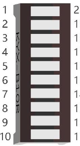

ESP32-S3 board
The brain that runs your uploaded sketch.
TinySkiff ESP32-S3 Lab · Day 8 of 30
Today the light gains a tail — and you'll see exactly why it moves. You reuse the same LED bar from Day 6, then upload a sketch that draws one still frame at a time — eight brightnesses set at once, a short pause, then the whole pattern nudged one step along the bar. Run those frames fast enough and they blend into a single gliding comet with a trailing tail. It's the same trick your eye plays at the cinema.
TSK-DAY08-METEOR
Hand this to an agent so it can pull the lesson packet and coach you step by step.
01 First, know the pieces
The same six things as Day 6 — you may already have them wired. Tap Define on any part you haven't met; the answer opens as a field note you can read and dismiss without losing your place.
The brain that runs your uploaded sketch.

Spreads the pins into rows you can reach and label.

The same strip from Day 6 — ten small LEDs, each its own segment.

One in series with each driven segment to keep every current gentle.

Temporary, solder-free connections.

Uploads the sketch to the board.
02 Make the physical circuit
This is the same LED bar circuit you built on Day 6 — if it's still on the breadboard, you're nearly done. The one difference is that today's sketch drives eight of the segments, because each needs its own PWM channel and the board has eight, so two segments stay dark.
The bar can go in backwards. The LED bar's label direction is easy to reverse. If the driven segments stay dark once you upload, rotate it 180° in the breadboard and try again. Unplug USB before you move any wire.
03 One action at a time
This is the main path — you can finish the day without opening a single field note. Tap each step as you go to keep your place.
Confirm the Day 6 LED bar is still wired, or rebuild it — LED bar across the centre channel, one 220 Ω resistor per segment, common row to ground.
Keep USB unplugged while you check or move any wire.
Note that only eight segments are wired for PWM today, since the board has eight PWM channels; two segments stay dark on purpose.
Compare every wire to the chart before you plug in USB.
Open Sketch_04.2_FlowingLight2.ino in Arduino IDE and upload it.
Watch a bright segment with a fading tail glide along the bar and back.
04 Read just enough code
The sketch keeps the pins in one list, like Day 6, and adds a second list of brightness values. That second list is the whole animation — a bright head with values that fall off behind it — and each frame the loop shows a moving slice of it. Switch to MicroPython if you'd rather see the same idea in Python — the wiring never changes.
const byte ledPins[] = {21, 47, 38, 39, 40, 41, 42, 2};
const byte chns[] = {0, 1, 2, 3, 4, 5, 6, 7};
const int dutys[] = {0,0,0,0,0,0,0,0, 1023,512,256,128,64,32,16,8, 0,0,0,0,0,0,0,0};
void setup() {
for (int i = 0; i < 8; i++) {
ledcAttachChannel(ledPins[i], 1000, 10, chns[i]);
}
}
void loop() {
for (int i = 0; i < 16; i++) {
for (int j = 0; j < 8; j++) {
ledcWrite(ledPins[j], dutys[i + j]);
}
delay(100);
}
}ledcAttachChannel(ledPins[i], 1000, 10, chns[i])Gives each of the eight pins its own PWM channel, so every segment can hold a brightness of its own — the per-LED control each frame needs. const int dutys[] = {0,..., 1023,512,256,128,64,32,16,8, ...,0}A brightness for every position — bright head down to a faint glow, with dark padding on each side. Those falling numbers are the tail, baked into the data rather than redrawn each frame. ledcWrite(ledPins[j], dutys[i + j])Shows one eight-wide slice of the list — a single frame; the i offset moves that slice one step further each pass, so successive frames make the comet travel. Optional side path · same circuit
mypwm = myPWM(21,47,38,39,40,41,42,2)
chns = [0,1,2,3,4,5,6,7]
dutys = [0,0,0,0,0,0,0,0, 1023,512,256,128,64,32,16,8, 0,0,0,0,0,0,0,0]mypwm = myPWM(21,47,38,39,40,41,42,2)A helper wraps each of the eight pins as a PWM object so they can hold brightness in Python.dutys = [...1023,512,256,128,64,32,16,8...]The same falling gradient as the Arduino sketch — the head is brightest and the tail fades.A helper pwm.py wraps each pin as a PWM object. Run it in Thonny if MicroPython is set up; otherwise skip it — it should never block the Arduino-first path.
05 Understand, don't memorise
There's no special "animation" feature on the chip. Everything that moves — film, a game, this bar — is still frames shown one after another, fast. The loop is your projector — each pass sets a fresh picture and pauses, and a small change between frames becomes motion.
Each time through the loop the board sets all eight brightnesses at once and pauses. That fixed picture is one frame.
A list holds a brightness for every position — a bright head with values that fall off behind it. That falling shape is the tail.
Before the next frame the pattern shifts one LED along the bar. A small move plus a short pause reads as the head creeping forward.
At about ten frames a second the pauses disappear and the separate steps blend into one comet gliding down the bar.
set eight brightnesses → pause → shift one step → repeat = a moving picture
PWM flicks each pin on and off very fast; the fraction of time it stays on sets how bright that segment looks, so one row can carry a smooth gradient of its own.
Each frame lingers on your eye for an instant, and the next arrives before it fades. Around ten frames a second, they merge into continuous motion — the same trick a film reel uses.
The brightness list is longer than the bar and padded with dark at both ends. Each frame shows a different eight-LED slice of it, so the comet can slide in from a dark bar and back out again.
06 Know it worked
Nothing prints to the screen today — the proof is the moving comet on the bar.
Two segments stay dark on purpose — only eight are on PWM, because the board has eight PWM channels.
07 Make the idea yours
Same working circuit, small edits to the one sketch — each one changes the animation and shows you a different part of how it works. All three fit inside today's time and leave the wiring untouched.
Change delay(100) to delay(500) and upload. The comet now steps forward once every half-second, so you can watch each individual frame arrive — the motion you saw was these same stills, shown too fast to separate.
Edit the falling numbers in dutys — add more dim values for a longer tail, fewer for a stubbier one. That list is the animation, so predict the new shape before you upload, then check it.
Reverse the order of the bright block in dutys so it climbs from dim up to bright. The head and tail trade ends, and the comet appears to run the other way — proof that head and tail are only the shape of the list.
08 Learn it with a hand on the tiller
Every lesson ships with a code and a machine-readable packet, so an agent can guide you with full context.
TSK-DAY08-METEOR
How the agent should behave: confirm the Day 6 circuit first, then teach the animation idea plainly — one loop pass draws a still frame, the dutys list is the whole animation, and shifting it one step each frame is what moves the comet. Guide edits one at a time, wait for the learner to confirm, explain terms on request, and always check wiring, board, port, and USB before changing code.